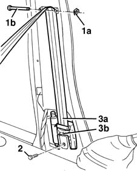
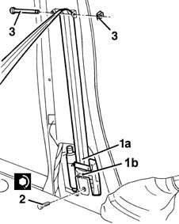

7065A10 , (One), front SEAT BELT left or right - R.R.
- Path
- Procedures > 70 FITTINGS > 7065 SEAT BELTS AND ACCESSORIES > 7065A FRONT SEAT BELTS > 7065A10 , (One), front SEAT BELT left or right - R.R.
- Kind
- repair procedure (removal / refitting; the operation number is the code)
- Applies to
- all engines; all production periods
- Interactive page
- https://sloeber94.github.io/elrnDB-fMltpl/en/#/2892273
Applies to: all engines; all production periods
Applies to: all engines; all production periods
 Removing
Removing
 Refitting
Refitting7045A10 l/h or r/h front seat (one) - r+r
3380A44 handbrake/linkage protection - r+r (left only)
7040H34 central pillar trim - r r
1. Remove the clip (1a) and withdraw the through stud (1b).
2. Undo the bolt.
3. Remove the seat belt with pretensioner (3a).

Applies to: all engines; all production periods
Place the pretensioner in the special cabinet, resting it on a free surface.
Applies to: all engines; all production periods
Refitting
Removing1. Refit the pretensioner (1a) checking that the centring pin is positioned correctly (1b).
2. Tighten the bolt to the specified torque.
 | Fastening | Component | Ø | Value (daNm) |
|---|---|---|---|---|
2 | Bolt | FRONT SEAT BELT PRETENSIONER. | - | 4.0 |
3. Fit the through stud and fit the clip.

Applies to: all engines; all production periods
7040H34 central pillar trim - r r
3380A44 handbrake/linkage protection - r+r (left only)